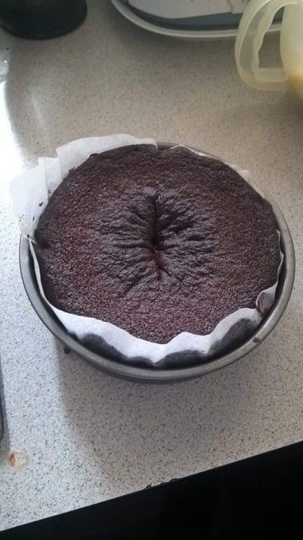

Keke de kaka
Volver

Ingredientes:
- Caca
- Grasa
- Tendones
- Piedras de riñones
Pasos:
- Comes tendones con grasa y piedras. Que las piedras estén entre blandas y duras, como una pasa.
- Esperas a que tu digestión haga el trabajo técnico.
- Vas al baño junto a un bowl.
- Depositas delicadamente tu ano en el bowl y dejas que la gravedad haga su trabajo.
- Batir y poner en un recipiente apto hornos, esperar 45 min. y listo. KEKE DE KAKA¡!¡!¡!¡!¡